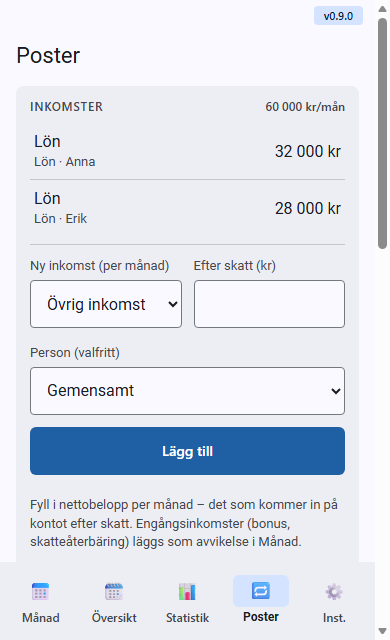
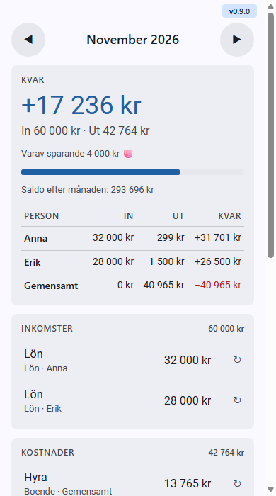
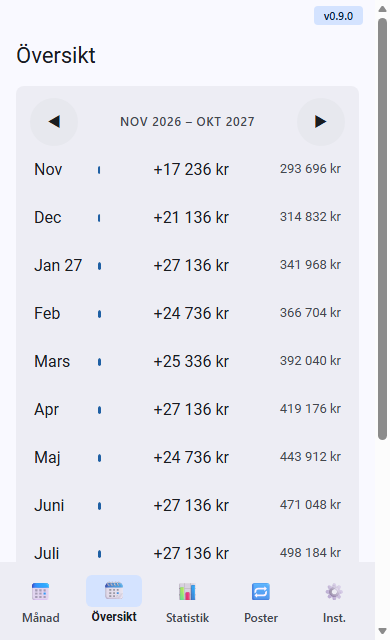
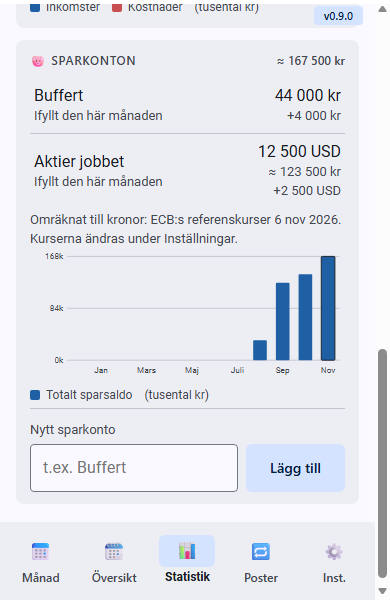
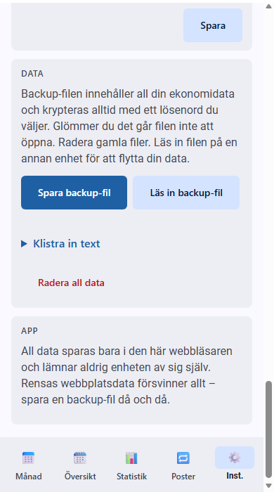

🐷 Sparkonton
+ Nytt sparkonto
Poster
Inkomster
+ Ny inkomst
Kostnader
+ Ny kostnad
Tryck på en post för att ändra den, håll in för att markera flera. Nya poster gäller från den månad du tittar på.
Inställningar
Allmänt
Byter du valuta räknas alla belopp om med valutakurserna (Ångra finns). Sparkonton behåller sin egen valuta.
Startsaldo
Valfritt. Visar löpande saldo i översikten från vald månad.
Valutakurser
Ungefärliga kurser för sparkonton i utländsk valuta. Appen hämtar inga kurser – ändra dem själv när du vill.
Hushåll
Personer
Valfritt. Lägg till personerna i hushållet så kan varje inkomst och kostnad kopplas till en person – eller vara gemensam.
Inkomstkategorier
Kostnadskategorier
Data
Papperskorg
Poster, avvikelser och sparkonton du tar bort ligger här i 30 dagar. Sedan raderas de för gott.
Fler valCSV, text, egen kod, radera
Ett okrypterat kalkylark, t.ex. för Excel.
Klistra in text
All data finns bara i den här webbläsaren. Läs in backup-filen på en annan enhet för att flytta den.
App
All data finns bara i den här webbläsaren. Spara en backup-fil då och då.
Alla mina appar
Spara som app: Android (Chrome) – tryck ⋮ och välj Installera app. iPhone (Safari) – tryck Dela och välj Lägg till på hemskärmen.
Ladda ner (HTML) ger hela appen i en enda fil som du öppnar i webbläsaren, även utan nät. Den sparar sin data för sig – flytta data dit med en backup-fil.
Hjälp och manualSå funkar appen
Hjälp
Kom igång

Gå till Poster och lägg in dina inkomster (efter skatt) och fasta kostnader. Ange hur ofta en kostnad kommer – varje månad, varannan, kvartal eller en gång om året – och från vilken månad.
Allt läggs in en gång. Sedan räknar appen ut varje månad åt dig.
Markera flera poster: håll fingret på en post tills den blir markerad och tryck på fler. Avsluta sätter en sista månad på alla markerade (historiken bakåt finns kvar), Ta bort lägger dem i papperskorgen. Ångra finns direkt efteråt. ✕ eller Bakåt avslutar.
Sortera poster: tryck på ↕ ovanför Inkomster. Då visas kolumnerna Belopp, Namn, Kategori och Start. Tryck på en kolumn för att sortera på den, och på samma kolumn igen för att vända ordningen (↑ stigande, ↓ fallande). Valet gäller både inkomster och kostnader och sparas.
Varför din data är säker här
Här finns hela din ekonomi: lön, lån, räkningar, sparande och vem i hushållet som betalar vad. Sådant ska inte hamna hos ett företag, en annonsör eller en hackare.
Ingen server att hacka. De flesta stora läckor sker när ett företags databas med miljontals användares uppgifter hackas. Här finns ingen sådan databas: din data finns bara i din telefon. Den som vill åt den måste komma åt just din telefon.
Inget att sälja. Många gratisappar – och även betalappar – tjänar pengar på din data eller delar den med partner för annonser och analys. Den här appen har inget konto, ingen analys, ingen reklam och inga spårare. Webbläsaren spärrar dessutom tekniskt alla anrop ut, så datan kan inte skickas iväg ens av misstag.
Låst backup. Backup-filen krypteras med AES-256 och ditt lösenord. Lägger du den i molnet ser molntjänsten bara obegriplig data.
Öppen kod. All kod ligger öppet på GitHub och kan granskas av vem som helst.
Ärligt: inget är 100 % säkert. Det som återstår är din egen telefon – lås den med kod och håll den uppdaterad – ett svagt backup-lösenord, och att appens kod på GitHub Pages inte ändras av någon obehörig. Men för den här sortens uppgifter finns inget säkrare praktiskt sätt än att de aldrig lämnar telefonen.
Månad

Visar vad som är kvar efter månadens kostnader, och hur mycket av det som är sparande.
Byt månad med ◀ ▶ eller svep åt vänster/höger. Tryck på en rad för att ändra beloppet bara den här månaden. + Avvikelse lägger till en engångspost, t.ex. nya däck eller en tandläkarräkning.
Översikt

De kommande 12 månaderna på en gång. Månader med underskott markeras.
Fyll i ett Startsaldo under Inställningar för att se det löpande saldot efter varje månad.
Statistik och sparande

Nyckeltal, sparkvot, kostnader per kategori och in/ut de senaste 12 månaderna. Kostnader i kategorin Sparande visas som sparande.
Sparkonton (längst ner i Statistik): lägg till ett konto och fyll i vad som står på det varje månad. Kontot kan ha en annan valuta (t.ex. USD); då räknas summan om till din valuta med kurserna under Valutakurser.
Personer och kategorier
Valfritt: lägg till personerna i hushållet, så kan varje post höra till en person eller vara gemensam. Kategorierna kan byta namn, läggas till och tas bort.
Papperskorg
Poster, avvikelser och sparkonton som du tar bort hamnar i Papperskorg under Inställningar. Där ligger de i 30 dagar och kan tas tillbaka med Återställ, med sina ändrade belopp per månad. Sedan raderas de för gott. Töm papperskorgen raderar allt på en gång (Ångra finns direkt efteråt).
Språk och valuta
Appen är på svenska med kronor från början. Byt språk och valuta (kronor, euro, dollar, pund, norska eller danska kronor) under Inställningar → Språk och valuta.
Byter du valuta när du redan har data räknas alla belopp (inkomster, kostnader, avvikelser, startsaldo och papperskorgen) om med valutakurserna. Ångra finns direkt efteråt. Sparkonton behåller sin egen valuta.
Tal skrivs alltid likadant (1 250,50), oavsett språk.
Valutakurser
Appen har ungefärliga kurser från ECB inbyggda (datumet står i kortet). De uppdateras när appen uppdateras – appen hämtar aldrig kurser själv. Du kan skriva in egna kurser och trycka Spara; Använd appens kurser återställer. Kurserna är i kronor per enhet, oavsett vilken valuta du har.
Backup och flytt

Under Data: tryck Spara backup-fil. Filen heter t.ex. budget-buddy-2026-11-09.txt och hamnar bland hämtade filer (i Claude-appen bekräftar du först). Gör det då och då.
För att läsa tillbaka: tryck Läs in backup-fil och välj filen, kontrollera sammanfattningen och tryck Ersätt. All nuvarande data ersätts – Ångra finns direkt efteråt.
Går det inte att välja filen: öppna Klistra in text och klistra in filens innehåll.
Filen innehåller all din ekonomidata och låses alltid med din kod (se nedan). Radera gamla filer.
Backup-filen låses alltid med din kod: 16 slumpade tecken som appen skapar åt dig första gången den startas och sparar på enheten. Vill du hellre använda en egen kod (t.ex. samma i alla dina appar) trycker du Välj egen kod – den måste ha minst 16 tecken med stor och liten bokstav, siffra och specialtecken, samma krav som den skapade. Backup sparas med ett tryck. Under Inställningar → Data finns Din kod: Visa, Kopiera och Ny kod. Spara koden i din lösenordshanterare – på en ny telefon (eller efter Radera all data) behöver du den för att öppna en backup. Läser du in en backup med en annan kod används den koden sedan för nya backuper. Ny kod gör att gamla backup-filer bara öppnas med den gamla koden (Ångra finns). Appen samlar ingen data – koden är bara en nyckel som skyddar dina backuper.
Bakåt
Telefonens bakåtknapp stänger först den ruta som är öppen, sedan markeringsläget. Därefter går den tillbaka genom flikarna du besökt. Appen stängs först i fliken du började i.
Installera och offline
Android (Chrome): menyn ⋮ → Installera app. iPhone (Safari): Dela → Lägg till på hemskärmen.
Installerad fungerar appen helt utan nät. Nya versioner hämtas automatiskt.
Integritet
Appen gör inga anrop – ingen server, ingen bankkoppling, ingen analys, inget konto. All data finns bara i den här webbläsaren.
Rensar du webbplatsdata försvinner allt. Därför: spara en backup-fil då och då.
Help
Get started
Go to Items and add your income (after tax) and fixed expenses. Say how often an expense comes – every month, every other month, quarterly or once a year – and from which month.
Everything is entered once. After that the app works out every month for you.
Select several items: hold your finger on an item until it is selected and tap more. End sets a last month on all selected (the history is kept), Remove puts them in the trash. Undo is available right afterwards. ✕ or Back ends.
Sort items: tap ↕ above Income. The columns Amount, Name, Category and Start then show. Tap a column to sort by it, and the same column again to reverse the order (↑ ascending, ↓ descending). The choice applies to both income and expenses and is saved.
Why your data is safe here
This app holds your whole financial life: salary, loans, bills, savings and who in the household pays what. That should not end up with a company, an advertiser or a hacker.
No server to hack. Most big leaks happen when a company's database with millions of users' data is hacked. There is no such database here: your data is only in your phone. Anyone who wants it has to get into your particular phone.
Nothing to sell. Many free apps – and paid ones too – make money from your data or share it with partners for ads and analytics. This app has no account, no analytics, no ads and no trackers. The browser also technically blocks every request out, so the data cannot be sent anywhere, not even by mistake.
Locked backup. The backup file is encrypted with AES-256 and your password. If you put it in the cloud, the cloud service only sees unreadable data.
Open code. All the code is public on GitHub and can be reviewed by anyone.
Honestly: nothing is 100 % safe. What remains is your own phone – lock it with a code and keep it updated – a weak backup password, and that the app's code on GitHub Pages is not changed by someone unauthorised. But for this kind of data there is no safer practical way than never letting it leave the phone.
Month
Shows what is left after the month's expenses, and how much of it is savings.
Change month with ◀ ▶ or swipe left/right. Tap a line to change the amount for this month only. + Deviation adds a one-off item, e.g. new tyres or a dentist's bill.
Overview
The next 12 months at once. Months with a deficit are marked.
Fill in a Starting balance under Settings to see the running balance after each month.
Statistics and savings
Key figures, savings rate, expenses by category and in/out over the last 12 months. Expenses in the category Savings are shown as savings.
Savings accounts (at the bottom of Statistics): add an account and fill in what is on it each month. The account can have another currency (e.g. USD); the total is then converted to your currency with the rates under Exchange rates.
People and categories
Optional: add the people in the household, so each item can belong to a person or be shared. Categories can be renamed, added and removed.
Trash
Items, deviations and savings accounts you delete end up in the Trash under Settings. They stay there for 30 days and can be brought back with Restore, with their changed amounts per month. Then they are deleted for good. Empty the trash deletes everything at once (Undo is available right afterwards).
Language and currency
The app starts in Swedish with kronor. Change language and currency (kronor, euro, dollar, pound, Norwegian or Danish kroner) under Settings → Language and currency.
If you change currency when you already have data, all amounts (income, expenses, deviations, starting balance and the trash) are converted with the exchange rates. Undo is available right afterwards. Savings accounts keep their own currency.
Numbers are always written the same way (1 250,50), whatever the language.
Exchange rates
The app has approximate rates from the ECB built in (the date is shown in the card). They are updated when the app is updated – the app never fetches rates itself. You can enter your own rates and tap Save; Use the app's rates resets them. The rates are in Swedish kronor per unit, whatever your currency.
Backup and moving
Under Data: tap Save backup file. The file is called e.g. budget-buddy-2026-11-09.txt and ends up among your downloads (in the Claude app you confirm first). Do it now and then.
To restore: tap Restore backup file and choose the file, check the summary and tap Replace. All current data is replaced – Undo is available right afterwards.
If you cannot choose the file: open Paste text and paste the file's contents.
The file contains all your financial data and is always locked with your code (see below). Delete old files.
The backup file is always locked with your code: 16 random characters the app creates for you the first time it starts and stores on the device. If you would rather use your own code (e.g. the same in all your apps), tap Choose your own code – it needs at least 16 characters with upper and lower case, a digit and a special character, the same requirements as the created one. A backup takes one tap. Under Settings → Data you find Your code: Show, Copy and New code. Save the code in your password manager – on a new phone (or after Delete all data) you need it to open a backup. If you restore a backup with a different code, that code is used for new backups from then on. New code means old backup files open only with the old code (Undo is available). The app collects no data – the code is just a key that protects your backups.
Back
The phone's back button first closes the box that is open, then the selection mode. After that it goes back through the tabs you have visited. The app closes only in the tab you started in.
Install and offline
Android (Chrome): the ⋮ menu → Install app. iPhone (Safari): Share → Add to Home Screen.
Installed, the app works completely offline. New versions are fetched automatically.
Privacy
The app makes no requests – no server, no bank connection, no analytics, no account. All data is only in this browser.
If you clear site data everything disappears. So: save a backup file now and then.